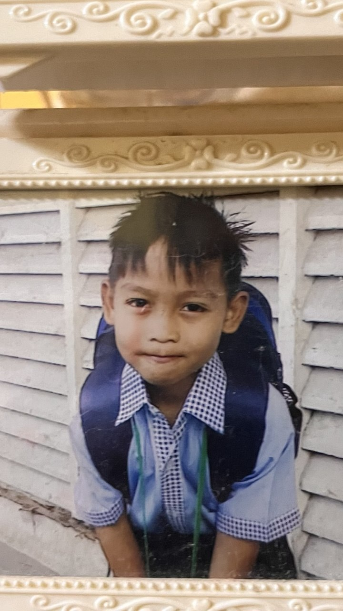
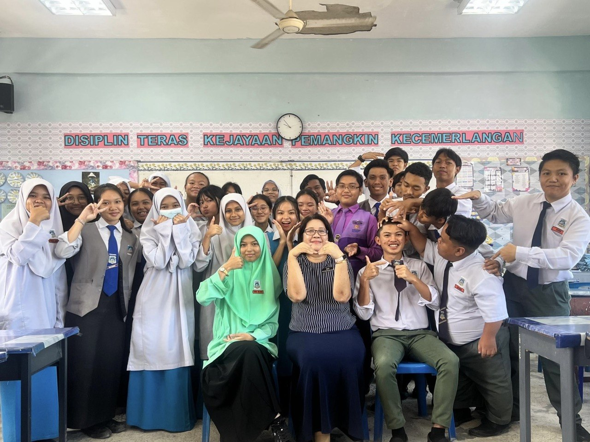
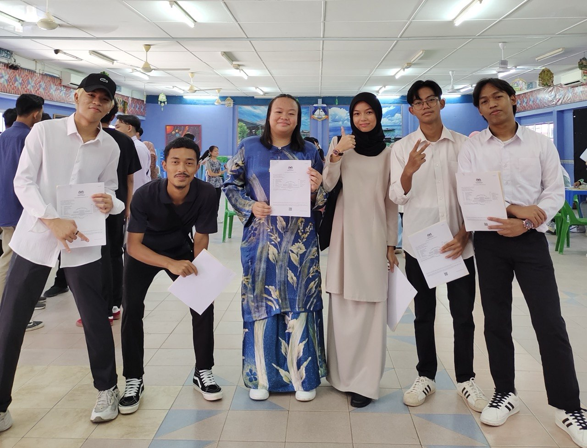
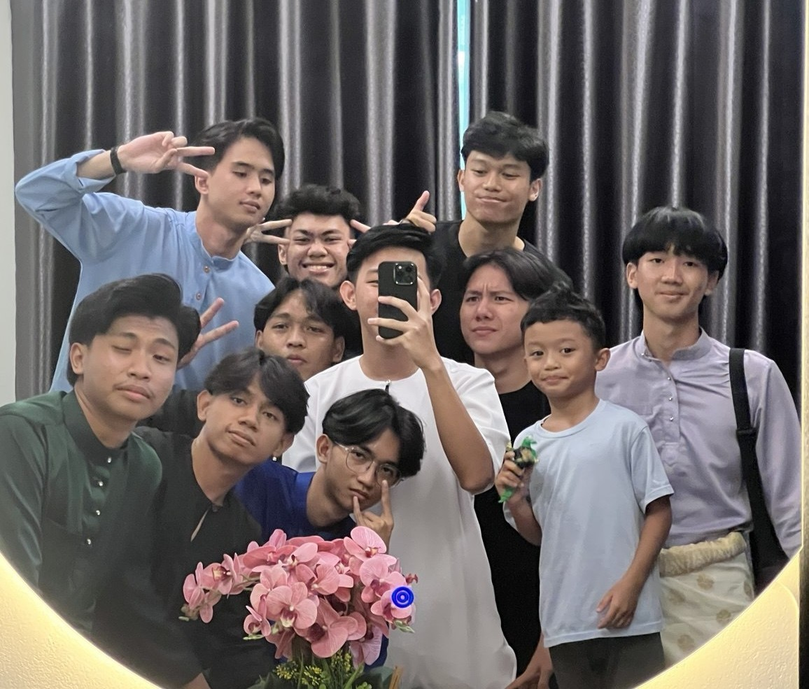
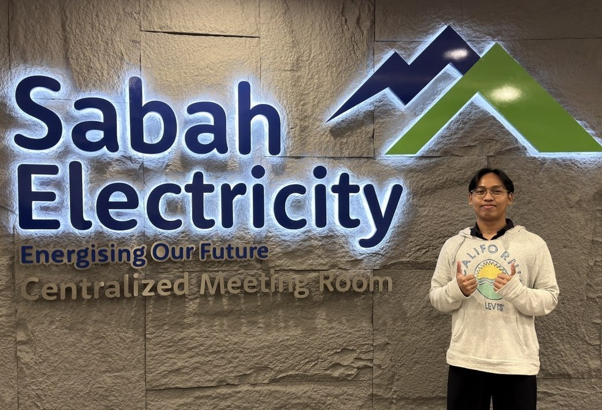

02 / My Story
How I got here
Not a straight road but every turn taught me something.
-
2012 – 2018
Born in Kota Kinabalu, raised in Kinarut
I was born in Kota Kinabalu, Sabah and lived there until I was five. When I was six, my family moved to Kinarut where I went to primary school at SK Pekan Kinarut. From Year 1 to Year 6 I was one of my school's athletes mostly in sprinting. Lining up for a race taught me early how much I like to compete and how good it feels to beat my own best time. It is also where I met friends who years later I ended up studying with again at UiTM.

Me during pre-school -
2019 – 2023
Secondary school at SMK Kinarut
In secondary school at SMK Kinarut in Papar, I was not the student in every club or competition. My race was with my exam results. My grades went up and down but every time I wanted to do better than my last result and that habit of chasing my own score has stayed with me. I sat for my SPM in 2023.

Last group photo of my classmates -
2023 – 2024
The wait after SPM
After SPM I stayed at home while waiting to enter UiTM. It was a quiet break between school and the next chapter and the calm before a busy few years.

After I got my SPM result -
2024
A fourth choice that grew on me
To be honest, Information Management was my fourth choice in UPU. I accepted it because I wanted to keep studying and started my diploma at UiTM Kampus Samarahan 1 in Sarawak in September 2024. It turned out to be more interesting than I expected and I also met amazing people along the way.

Open house at Afif's house with my UiTM friends -
Jul – Sep 2026
Internship at SESB
I did my industrial training in the Security & Intelligence Department at Sabah Electricity Sdn. Bhd. I saw that staff still applied for access cards on paper then I suggested putting it online and built the system myself. I also built a system for reporting faulty CCTV cameras and it was the first time my work was used to solve a real problem.

Me during internship -
What's next
The story keeps going
My diploma ends in March 2027, but I already have a few plans lined up after that.
Quick questions
Why cars?
I like knowing how things work and engines are the best example. Most of the time I enjoy learning about them from Honda's B and K series to Proton's Campro and Mitsubishi's 4G63 and I could watch people fix and modify cars in my leisure time.
What is your dream car?
A clean Honda Civic EG Ferio. I'm working and saving up for one in the future so it is a long-term goal for me rather than a dream that stays a dream.
How many Gunpla kits have you built?
Five so far, all of them High Grade: Gundam Exia, Gundam Vidar, Gundam Barbatos Lupus, Banshee and Kamiki Burning Gundam.
What do you play with friends?
Mostly GTA Online, Dota 2 and FC 26.
What song is on repeat right now?
MONALISA by Eemrun and Concerto. Eemrun is my favourite artist and his album Menara Berkembar is my favourite album.
Where would you go first?
Suzuka Circuit in Japan. I want to see its figure-eight track at the Japanese Grand Prix in person.